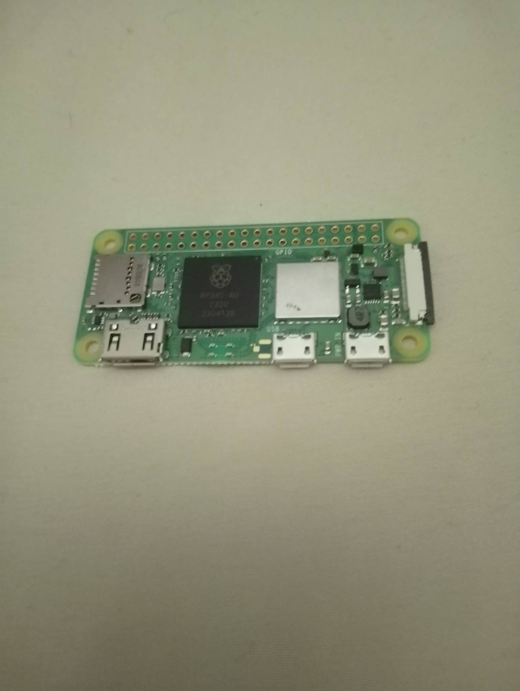
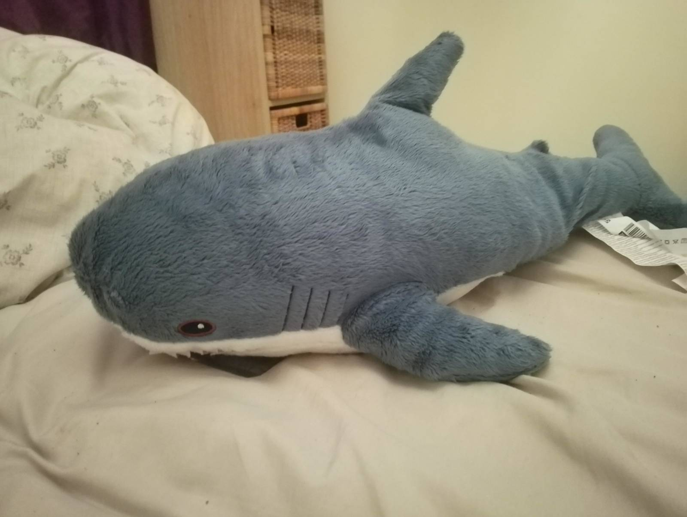
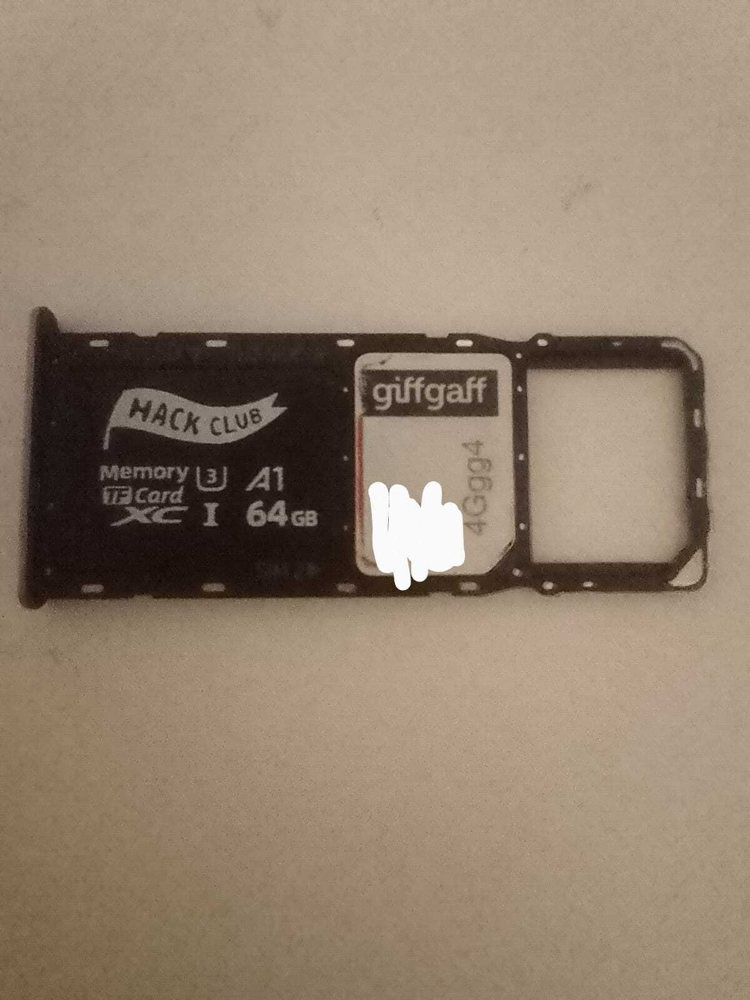
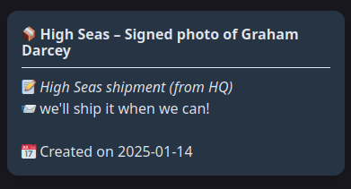
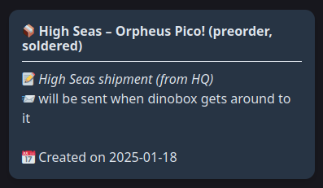
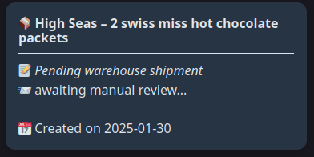
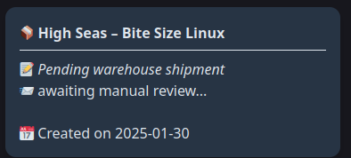
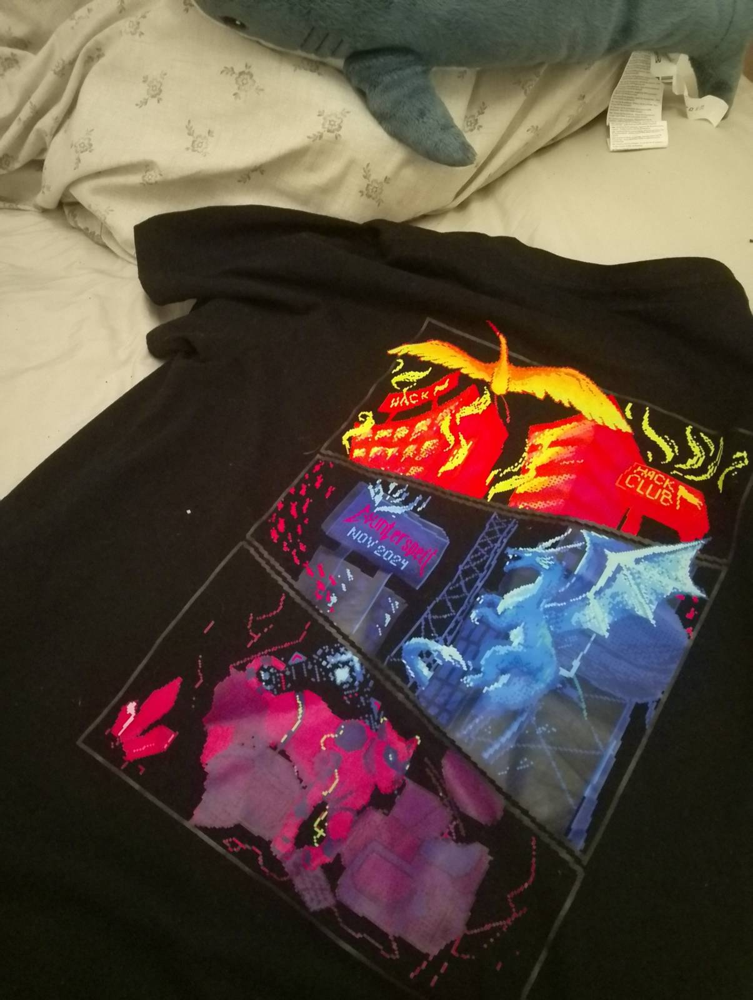
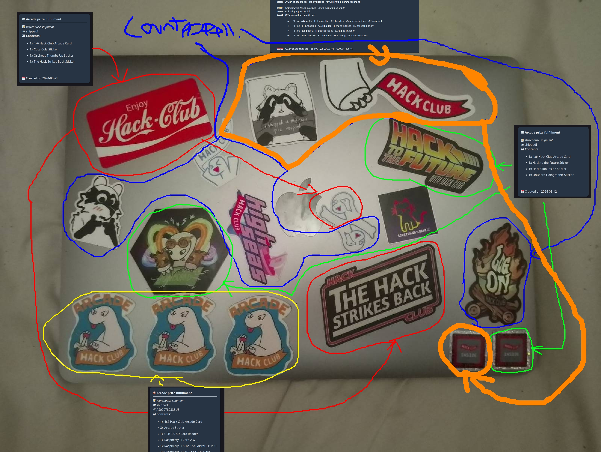

Here's everything I've ever recieved from Hack Club!
I'm writing this at the end of High Seas, and have took part in three Hack Club events:
- Arcade
- High Seas
- Counterspell
Stuff I got from Arcade
Raspberry Pi Zero 2 W

Well, I still haven't used this, as it didn't come with the necessary cables. Still, it's cool to admire the fact that it is so small and cheap, yet it's a full computer! It's SD card has been repurposed to run Android 15 on my Switch - how cool!
A domain for my friend, whose nickname is "Maledog". He... never used this, and now we're on no contact. Aw man.
Stuff I got from High Seas
Blahaj

I was never a fan of Blahajs until I got one. I'm not a fan of r/traa culture, however, after getting this guy, I've been hugging him to sleep every night. He's approved my life greatly. His name is Ayden and yes I consider him a male.
Hack Club 64gb SD Card

I picked this out to go with my phone upgrade to the Nokia C32. It lives on in my phone to this day, storing important files, movies and songs! I like the Hack Club logo, I feel like it's something that'll end up on a Michael MJD video in a few years. Also, it came with some lovely Japanese candy :D
Signed photo of Graham Darcey

I'll update this when it arrives, but I am keen to hang this on my wall.
Orpheus Pico

I'll update this when it arrives, but I think this is one of those things that'll be rare one day, I wanna resell it basically. If I need it in a future project though, I will have it :D
GitHub Invertocat Pin

I'll update this when it arrives, but I am keen to pin this to my bag.
Swiss Hot Chocolate

I'll update this when it arrives, but I'm keen to give it a taste test!
Bite Size Linux

I'll update this when it arrives, but I'm keen to have a read!
I hosted a competition for a free website, and my friend Azi won! If you ever need digital art, go commission her or something, she's amazing at it.
Stuff I Got From Counterspell
Counterspell Shirt

At the time I remember thinking "The design on this shirt is better than the one at Miku Expo 2024, and that was £50, so this shirt is basically worth over £50!" The math there is questionable at best, but this certainly is a shirt I like wearing, albeit usually with a second layer because I cannot show my fucked up wrists.
Raspberry Pi Zero 2 W (again)
Well, the prizes have been delayed quite a bit, so I still don't have this, but I imagine it will be just as cool to look at and do nothing with as the one I already own.
Here's what I did to earn them!
Stuff I made for Arcade
Dhilly Game 6 Remake

This project is a remake of Dhilly Game 6, and I passinately worked on it for a while for both Arcade and High Seas.
Dhilly Game 6 Remake Minecraft Texture Pack
This project brings Dhilly Game 6 Remake art to Minecraft!
Eve's Website 2.0

Where you are right now! One of my favourite projects ever. All the pages under my website are included here, including the Flash one.
Fitbit OS 5 Ticket Tracker
Basically an Arcade themed counting app, it was also my first time using Fitbit SDK's filesystem API!
Eve's Website Fitbit App
My website as a Fitbit app, it was meant to be fully navigatable but I didn't make it that far and eventually just gave up.
Stuff I made for High Seas
Eve's Website 2.0
Where you are right now! Only, it's came a long way since the initial Arcade versions. Seriously, I spent MOST of High Seas just adding cool stuff to this site. One of my favourite projects ever. All the pages under my website are included here, including the Flash one.
- lang: html, css, actionscript, js
- doubloons: 245
- hours: 19.9
- tracked with: wakatime vscode
- ysws: yes
- repo: eve-website
- link: bottom.monster
hfjONE clockface for Fitbit OS 5

The clockface I still daily drive on my Sense! I really love ONE and this clockface captures what I love about it perfectly.
- lang: js
- doubloons: 46
- hours: 3.7
- tracked with: wakatime vscode
- ysws: yes
- repo: hfjone-clock
- devices: versa 3, sense, versa 4, sense 2
- gallery: Fitbit Gallery Link
Dhilly Game Website

A website I hacked together for the Dhilly Game franchise, and a spirital successor to the OG Google Site. It's code is lazy and mobile unfriendly, this isn't something I'm proud of but I wanted the doubloons lol
Host Your Ships!

A website I hacked together because I was SICK of watching awful videos when voting for ships in High Seas.
Mikuddy JS

A Discord bot I hacked together because BotGhost kind of SUCKED at keeping my bot alive, and many people liked it (For some reason?).
- lang: js
- doubloons: 9
- hours: 1.1
- tracked with: wakatime vscode
- ysws: no
- repo: mikuddyjs
Eve's Website 3D

I saw a Hack Club YSWS for making 3D websites and got excited, but honestly? It was harder than I thought, and after hours of Stack Overflowing, ChatGPTing, and docs-reading, I just gave up because I couldn't get collisions to work.
Dhilly Game 6 Remake
This project is a remake of Dhilly Game 6, and I passinately worked on it for a while for both Arcade and High Seas. High Seas, however, was when I finished it, making it a "trye ship". This deserves ysws bonus imo, but oh well.
Website for "Dhilly Game 6 Remake"

My friend Ivan proposed me to have a bit of a coding session together. We both just kind of.. made really cool websites we otherwise wouldn't have? I'm glad he proposed the idea to me, and I'm glad I made this instead of reusing the (bad) template I had for the previous games.
Cool QR Code Holder For Fitbit OS 5

I wanted to store my Co-op membership card on my watch, but while there were many apps for this on Fitbit's gallery, I found them all to be too bloated. I wanted to make a single purpose app for my specific QR code, but thanks to High Seas, I decided to instead make something adaptable that I could share to the world!
- lang: js
- doubloons: 17
- hours: 1.2
- tracked with: wakatime vscode
- ysws: no
- repo: Cool-QR-Code-Holder
This page
That's right, you might even be here from High Seas! I'm making this page right at the end of High Seas to try and get those final doubloons in!
- lang: html
- doubloons: vote for me and find out!
- hours: probably about 2 hours by the time i'm done
- tracked with: wakatime vscode
- ysws: i doubt it
- repo: eve-website
Stuff I made for Counterspell
Murder Diaries
I was helping my team make something in Unity, but we couldn't finish it, so I made this backup game. I lost the source code for it, and it's more than a bit messy, but it got us second place!
STICKERS!!!!
